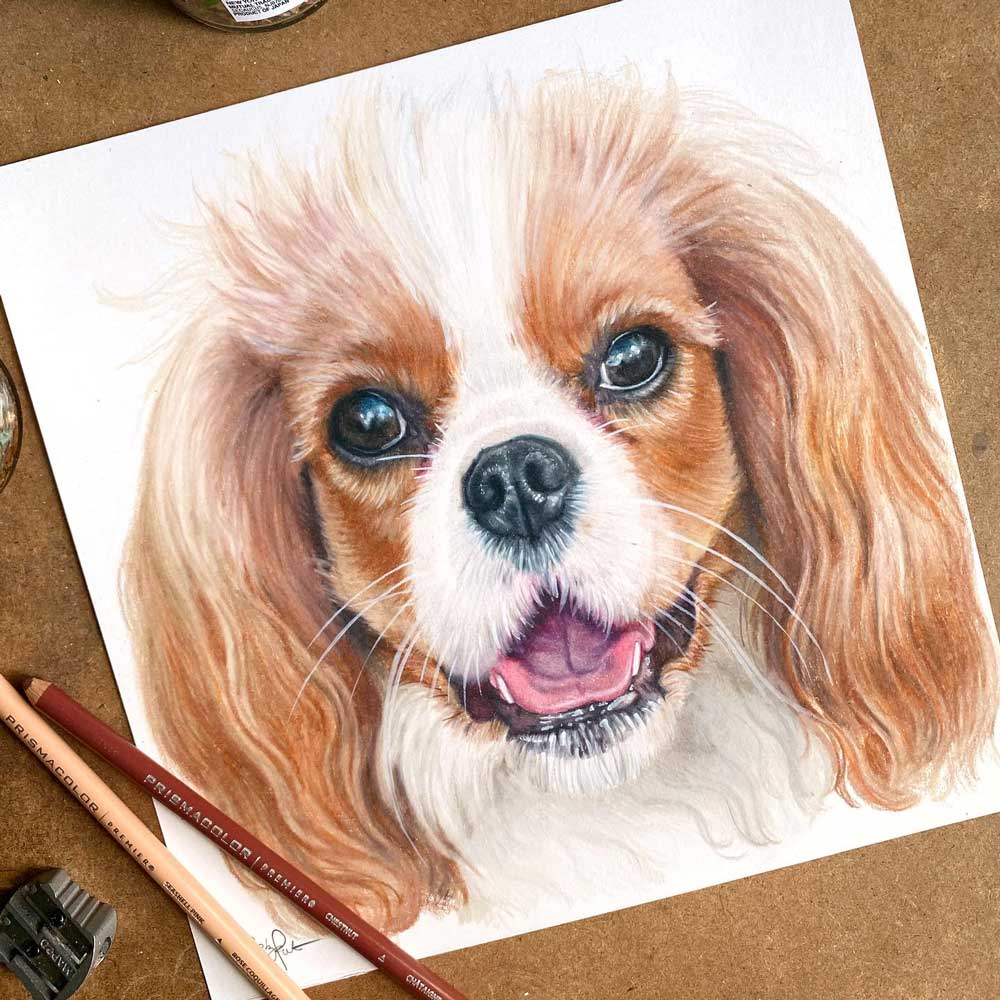
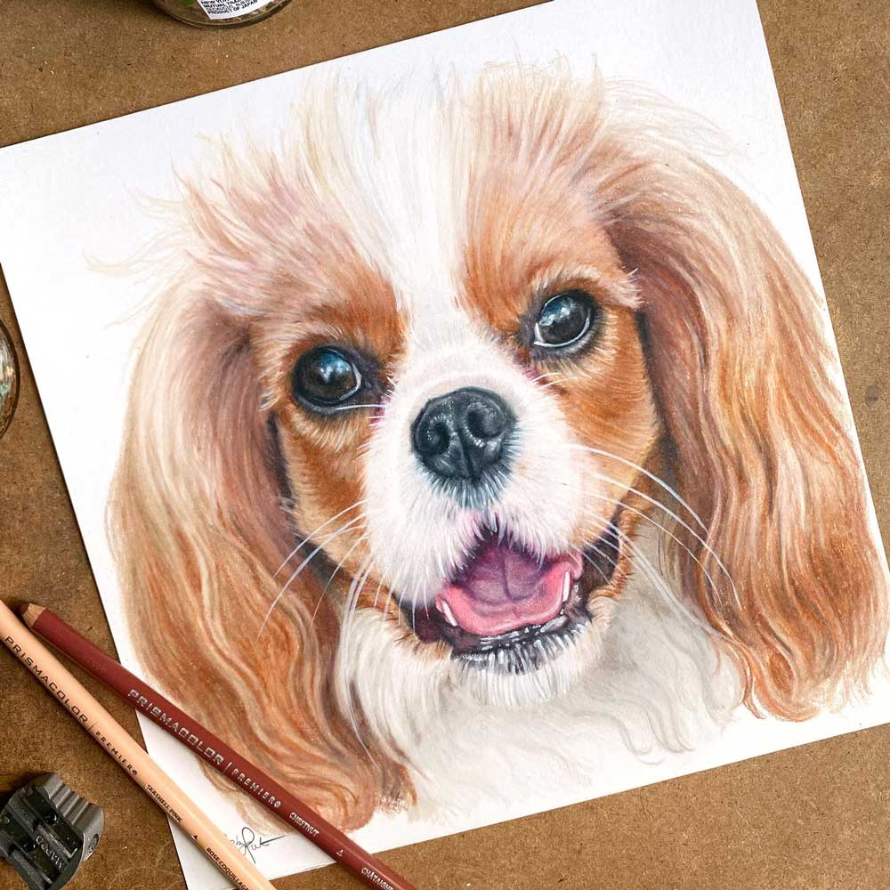

Welcome to my Artwork Page
Below are samples of my Colored Pencil Work!
Below are samples of my Colored Pencil Work!


 



I have been an Artist for many years and have always found inspiration from my surroundings. About six years ago I relocated to Atlanta from the Florida Coast and was pleasantly surprised at the amount of proud pet owners walking their dogs through the MANY parks that surrounded my new dwelling. It then dawned upon me that I could combine my two favorite things (animals and art) by offering commissioned hand drawn pet portraits!
I get asked a lot what I recommend to anyone else that wants to start drawing with colored pencils and I can’t recommend enough the following tools: